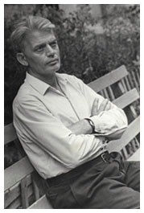
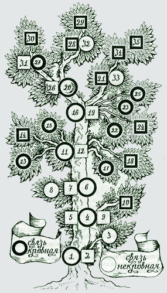
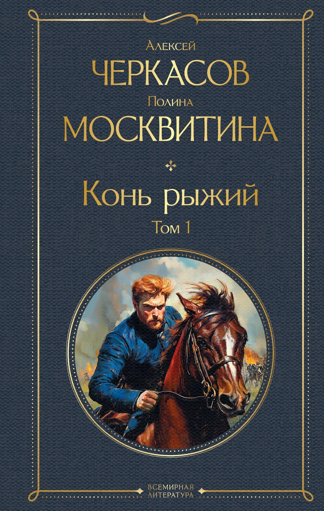

По следам Черкасова
Наведите на метку, чтобы увидеть краткую справку
Города на карте:
Алексей Тимофеевич Черкасов (1915–1973)
Алексей Тимофеевич Черкасов — русский советский писатель, автор знаменитой трилогии «Сказания о людях тайги» (романы «Хмель», «Конь рыжий», «Чёрный тополь»).
Детство и юность

Детство и юность Алексея Тимофеевича Черкасова прошли в суровых, но богатых на события условиях сибирской глубинки и во многом определили его характер и творческую судьбу. Будущий писатель родился 2 июня (20 мая по старому стилю) 1915 года в деревне Потапово Даурской волости Енисейской губернии. Его родителями были Тимофей Зиновьевич Черкасов и Евдокия Фоминична (урожденная Ткаченко). Отец происходил из рода потомков декабриста, барона Алексея Ивановича Черкасова. Однако отца своего Алексей знал мало: он воевал на фронтах Первой мировой войны, а когда мальчику было десять лет, родители развелись.
Воспитанием Алексея занимался в основном дед, Зиновий Андреевич. Дед был образованным человеком, волостным писарем, и именно он привил внуку любовь к литературе, обучил его грамоте и направил на путь сочинительства. Сам Черкасов позже вспоминал: «никогда, ни до, ни после никто на меня не имел такого влияния как дед, Зиновий Андреевич». Кроме того, дед привил мальчику любовь к труду: уже в раннем возрасте Алексей умел работать на токарном станке, ходил за плугом и управлялся по хозяйству, несмотря на то, что жили они бедно, но, по воспоминаниям писателя, удивительно дружно и весело. Спасая детей от голода, мать Евдокия Фоминична отвезла Алексея, его сестру Анну и брата Николая в Курагинскую коммуну (школу коммунистической молодёжи) «Соха и молот». Таким образом, отрочество и юность Черкасова прошли в детских домах Минусинска и Курагино. В коммуне он начал писать свой первый роман. Писать он начал рано — сначала стихи, а затем и прозу. Уже в 1934 году, в возрасте 19 лет, им была опубликована пьеса «За жизнь», которую поставили в Минусинском драматическом театре. После школы он два года проучился в Красноярском агропедагогическом институте, а затем уехал по комсомольскому призыву в Балахтинский район проводить коллективизацию. На селе Черкасов задержался на добрых пятнадцать лет, работая агрономом в совхозах Красноярского края и Северного Казахстана.
Родословное древо писателя

№ 1. Барон Иван Петрович Черкасов — отец декабриста, секунд-майор, белевский помещик.
№ 2. Мария Алексеевна Кожина — мать декабриста, первая жена барона Ивана Петровича Черкасова.
№ 3. Петр Иванович Черкасов — старший брат декабриста. Родился 22 сентября 1796 года, умер 12 февраля 1867 года. Участник Отечественной войны 1812 года, поручик, адъютант генерала Бороздина, впоследствии отставной полковник. До конца жизни сохранил дружеские связи в высших кругах светского общества. Много способствовал облегчению участи младшего брата — декабриста в ссылке. Будучи другом губернатора Таврической губернии, выхлопотал ему перевод на Кавказ. После отбытия наказания в Кавказском корпусе П. И. Черкасов бывал в Крыму («Декабристы в Крыму», «Крымская правда», № 284/15684, 3 декабря 1975 г. В. Русин).
№ 4. Барон Алексей Иванович Черкасов — декабрист, младший сын барона Ивана Петровича Черкасова и Марии Алексеевны Кожиной. Родился 15 ноября 1799 года, умер в апреле 1855 года, поручик квартирмейстерской части. Воспитывался в Московском университетском пансионе и Муравьевской школе колонновожатых. Член Северного (1824) и Южного обществ. Был арестован по делу декабристов и доставлен из Тульчина в Петербург жандармским унтер-офицером Любенко 17 января 1826 года на главную гауптвахту. А 18 января переведен в Петропавловскую крепость («Посадить по усмотрению и содержать хорошо», — помечено рукой императора на его деле). 10 июля 1826 года осужден по 7-му разряду и по конфирмации приговорен в каторжную работу на 2 года. 22 августа срок сокращен до 1 года.
№ 5. Первая жена декабриста — сибирячка, имя неизвестно.
№ 6. Андрей Алексеевич Черкасов — единственной сын декабриста, рожденный в г. Березове между 1828 и 1832 годом.
№ 7. Жена Андрея Алексеевича Черкасова — сибирячка, имя не установлено.
№ 8. Авдей Поликарпович («Дед Авдей»), фамилия не установлена, двоюродный брат (по матери) сына декабриста, сохранивший остатки библиотеки декабриста. Умер в 1948 году в деревне Сухонаково Красноярского края Даурского района. На нескольких книгах из этой библиотеки я лично (П. Москвитина) в 1951 году читала надпись: «Видал — Лепарский». По рассказам односельчан, книги эти были переданы «Дедом Авдеем» школьной библиотеке. Но сама школа еще только отстраивалась. А на месте сгоревшего в 1930 году пятистенка, в котором жили двоюродные братья Андрей Поликарпович и Зиновий Андреевич, тоже отстраивался новый дом. После пожара Зиновий Андреевич переехал в село Потапово Даурской волости, где и родился будущий писатель А. Т. Черкасов.
№ 9. Елизавета Вячеславовна Коти — вторая жена декабриста.
№ 10. Марья — законная дочь декабриста от второго брака, пользовалась льготами после амнистии 1856 года. Родилась 7 августа 1855 года, уже после смерти отца-декабриста.
№ 11. Зиновий Андреевич Черкасов родился в 1866 году, умер в 1935 году, внук декабриста Алексея Ивановича Черкасова, дед писателя Алексея Тимофеевича Черкасова, сформировавший его писательское мировоззрение и передавший ему изустно предание рода о беглом каторжнике.
№ 12. Жена Зиновия Андреевича Черкасова — Агафья Георгиевна Лаптева, уроженка деревни Потаповой, Красноярского края. Родилась в 1867 г.
№ 13. Петр Зиновьевич Черкасов — старший сын Зиновия Андреевича, матрос, погиб на крейсере «Варяг».
№ 14. Надежда Зиновьевна Черкасова — старшая дочь Зиновия Андреевича, умерла в 1946 году.
№ 15. Павел Зиновьевич Черкасов — второй сын Зиновия Андреевича. Воевал в Отечественную войну 1941 года, погиб на фронте.
№ 16. Тимофей Зиновьевич Черкасов — третий сын Зиновия Андреевича, отец писателя, погиб в 1938 году.
№ 17. Андрей Зиновьевич Черкасов — четвертый сын, кузнец, умер в конце войны.
№ 18. Марья Зиновьевна Черкасова — младшая дочь Зиновия Андреевича, умерла в 1985 году.
№ 19. Евдокия Фоминична Ткаченко — мать писателя, украинка, родилась в 1895 году, умерла в 1977 году.
№ 20. Алексей Тимофеевич Черкасов — писатель -праправнук декабриста, автор трилогии «Хмель», «Конь Рыжий», «Черный тополь» и других произведений. Родился 2 июня 1915 года, умер 13 апреля 1973 года.
№ 21. Анна Тимофеевна Черкасова — сестра писателя, родилась 30 декабря 1918 года.
№ 22. Николай Черкасов — умер трех лет.
№ 23. Николай Черкасов — погиб в 1943 году.
№ 24. Иния Черкасова — умерла пяти лет.
№ 25. Геннадий Черкасов — умер пяти лет.
№ 26. Полина Дмитриевна Черкасова-Москвитина — вдова и соавтор писателя — потомка декабриста.
№ 27. Алексей Алексеевич Черкасов — сын писателя.
№ 28. Наталья Алексеевна Черкасова — дочь писателя.
Творческий путь
Творческий путь Алексея Тимофеевича Черкасова — это история удивительной стойкости, где личные трагедии переплавились в большую литературу, а главная книга, трилогия «Сказания о людях тайги», родилась из встречи с живой легендой. Свой путь в литературе Черкасов начал рано: уже в 1929 году, во время учебы в Красноярском агропедагогическом институте, он посещал литгруппу при газете «Красноярский рабочий» и приступил к созданию своего первого романа «Ледяной покров». В 1934 году, в возрасте 19 лет, в Минусинском драматическом театре с успехом прошла его первая пьеса «За жизнь», и тогда же он отправил рукопись «Ледяного покрова» в Москву Максиму Горькому, даже сумев встретиться с ним и получить одобрение. Однако обе эти ранние рукописи, а также роман «Мир, как он есть», над которым он работал в 1940–1941 годах, были безвозвратно утеряны во время его тюремных заключений и лагерей. После всех испытаний, в 1949 году, в московском издательстве «Советский писатель» вышла первая печатная книга Черкасова — сборник повестей и рассказов «В стороне сибирской», который стал его официальным дебютом в большой литературе.
Настоящую славу Черкасову принесла монументальная трилогия «Сказания о людях тайги», история которой началась с удивительной встречи. В 1941 году, работая корреспондентом, Черкасов получил из деревни Подсинее письмо, написанное старинными буквами «ять», «фита» и «ижица», от 136-летней староверки Ефимии Юсковой, и, потрясённый её рассказами (в том числе о том, что в детстве она видела Наполеона), создал роман-эпопею, охватывающую почти полтора века истории Сибири. Трилогия включает три романа, написанных в соавторстве с женой, Полиной Москвитиной. «Хмель», первая часть, был задуман ещё в 1934 году и вышел отдельным изданием в 1963 году, его действие начинается в 1830 году и охватывает события от восстания декабристов до потрясений начала XX века. «Конь рыжий», вторая часть, вышел в 1972 году и посвящён событиям Гражданской войны в Енисейской губернии, а «Черный тополь», заключительная часть, опубликованная в 1969 году, рассказывает о сибирской деревне 1920-х годов, о периоде Великой Отечественной войны и первых послевоенных годах. Книги Черкасова имели огромный успех, выходили многомиллионными тиражами и были переведены на многие языки мира, а в 1991 году по мотивам романа «Хмель» был снят одноимённый фильм. На сцене Минусинского драматического театра в разные годы ставились спектакли по его произведениям, в том числе «Хмель» и «Черный тополь». Творческий путь Алексея Черкасова — это пример того, как человек, прошедший через немыслимые испытания, смог не только сохранить себя, но и подарить миру эпическое полотно, в котором ожила сама история Сибири.
Последние годы
Последние годы жизни Алексея Тимофеевича Черкасова прошли в Крыму, куда он переехал с семьёй из Красноярска в июне 1969 года. Причиной переезда стали настоятельные рекомендации врачей: суровый сибирский климат сильно подорвал здоровье супругов, и им было предложено сменить его на более тёплый, крымский.

В Симферополе семья Черкасовых поселилась в центре города, в небольшой квартире № 27 дома № 14 по улице Самокиша. Условия были очень стеснёнными: в квартире проживало пять человек, включая двоих детей и мать Алексея Тимофеевича. Однако, несмотря на бытовые трудности, именно здесь писатель завершил работу над своим главным произведением — романом «Конь рыжий», который стал связующим звеном в трилогии «Сказания о людях тайги».
Сам Алексей Тимофеевич, по воспоминаниям современников, очень тосковал по Сибири. Ему не хватало «сибирского духа», людей, которые в суровых условиях проявляли самоотверженность, мужество и чистоту помыслов. Возможно, именно эта тоска по родине и стала причиной того, что его последние произведения пронизаны такой глубокой любовью к сибирской земле.
Алексей Тимофеевич Черкасов скончался в Симферополе 13 апреля 1973 года от сердечного приступа. Ему было 57 лет. Писатель был похоронен на Симферопольском городском кладбище «Абдал». Сегодня память о нём бережно хранят не только в Сибири, но и в Крыму: на фасаде дома, где он жил, установлена мемориальная доска, а его супруга, Полина Дмитриевна Москвитина-Черкасова, и дочь Наталья долгие годы жили и работали в Симферополе, сохраняя его литературное наследие.